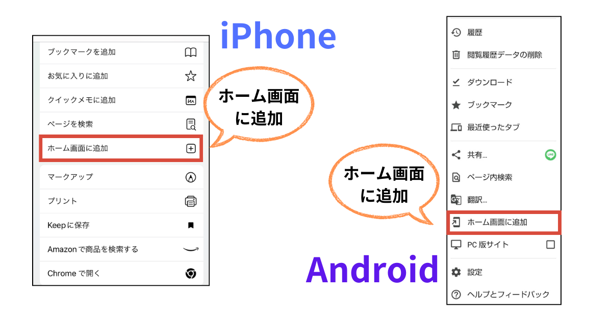

シェア
アプリURL
https://japan-precipitation.netlify.app/
二次元バーコード

https://japan-precipitation.netlify.app/
気象庁の気象データ をもとに、日本の降水量のマッピングを試みたアプリケーションです。
最新の気象データを２時間に１回スクレイピングして、加工し、アプリケーションにて配信しています。
PWAに対応しているので、iPhone、Androidともに、WEBブラウザの「ホーム画面に追加」からインストールできます。
こういうアプリを作りたい！という構想から７年が経ちました。
初めは、スクレイピングのやり方が分からず断念。
スクレイピングのスキルをマスターするも、気象庁のデータはCORSが許可されておらず、クライアントサイドプログラムでは取得できないことが判明し、断念。
Denoを用いて、ついにバックエンドから取得するスキルをマスターするも、今度は、文字コードがShift-JISになっており、文字化けを起こしてしまい、エンコードのやり方が分からずに断念。
文字コードの知識を学び直し、変換に成功するも、GitHub Actionsにてエラーが発生し、自動化に失敗。原因が特定できず、断念。
諦めきれず、もう一度、GitHub Actionsについて、学び直し、権限設定を修正し、ついに成功！
という挫折の時を経て、ついにアプリ化させた次第です。
日本では、ゲリラ豪雨などの集中豪雨が盛んに発生するようになりました。
今の雨雲の様子はどんな感じだろう？と雨雲レーダーを観察する習慣を身につけることが、豪雨対策の一歩ではないかと思っています。
よって、このアプリには、雨雲レーダーや気象衛星ひまわりの雲の様子のマップを掲載することにしました。
７年の歳月を経て、完成したアプリケーション。多くの方々にご覧いただけますと幸いです。
齋藤 仁志.